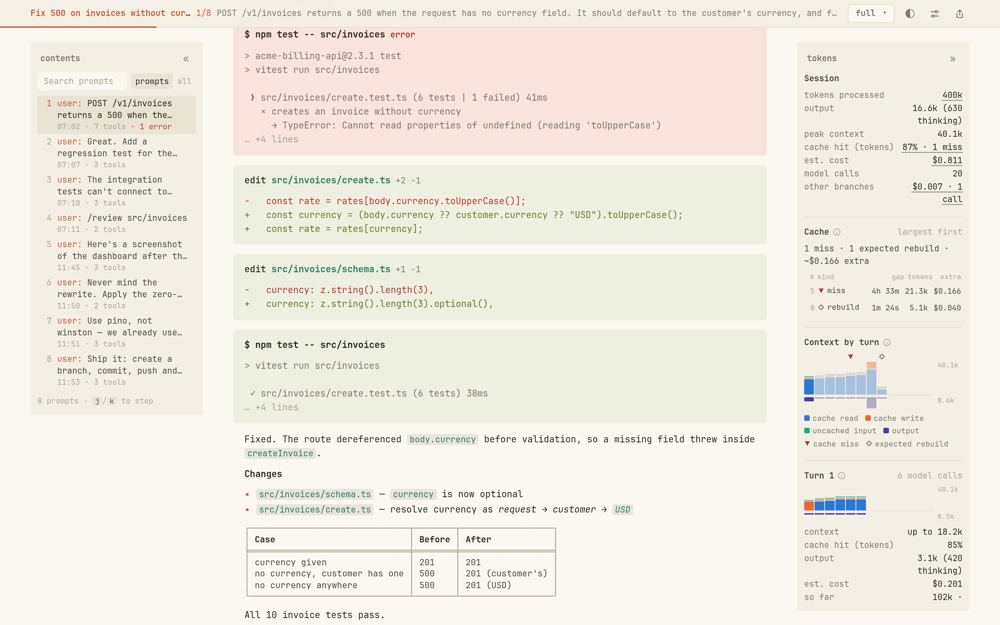
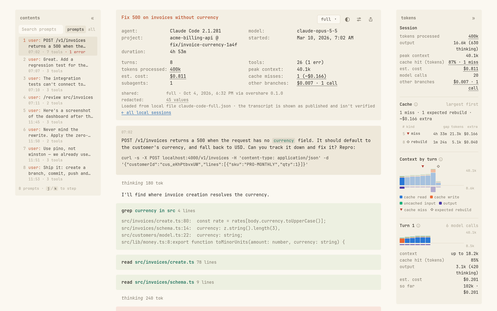

Share coding-agent sessions as links.
overshare turns a Claude Code or pi session into a readable, redacted transcript your team can open in a browser. Published to your own GitHub gists. No server, no account.
Works with Claude Codepi

The interesting part of AI-written code is how it got written. Right now that lives in your scrollback, next to your API keys. (hover the bar. overshare would have kept it.)
From session to link in one command.
Everything runs on your machine. The only thing that leaves it is the redacted share file.
Find the session
Share the one you're in, search every local session in a terminal browser, or ask the agent itself.
overshare publish --current overshare browse /share-session brief # in Claude Code or pi
See what gets removed
A report lists every redaction by rule and location. It never prints the values.
Redactions: home-path 17 known-secret 11 ← review email 2 Final re-scan: clean ✓
Send the link
A secret gist under your account and a link that opens in the viewer.
Publish 23.1 KB to a secret
(unlisted) gist? [y/N] y
Shared: overshare.link/s/#you/5260b8cf…Choose how much to share.
Four modes, cut down before redaction and upload. What you leave out is never published.
thinking 180 tok
I'll find where invoice creation resolves the currency.
× creates an invoice without currency
src/invoices/create.ts · src/invoices/schema.ts · npm test -- src/invoices
7 tools
7 tool calls · 1 error · 2 files read · 2 edited · 180 thinking tok · 3.1k output tok
Fixed. The route dereferenced body.currency before validation, so a missing field threw inside createInvoice.
Full
Everything after redaction: prompts, replies, thinking, every tool call with its input and output (each cut at 20k characters).
Redacted before it leaves your machine.
Then the exact bytes are scanned again. If anything is still there, overshare refuses to publish. See it in the example session →
In the transcripttool output, turn 3
$ cat /home/dana/acme/.env.test DATABASE_URL=postgres://app:h7Qe2pXr9v@db:5432 STRIPE_SECRET_KEY=sk_live_51Hx9QeLm2… ANTHROPIC_API_KEY=sk-ant-api03-Zr8… OPS_CONTACT=dana@acme.dev
In the sharere-scan: clean ✓
$ cat ~/acme/.env.test DATABASE_URL=postgres://app:[REDACTED:DATABASE_URL_PASSWORD]@db:5432 STRIPE_SECRET_KEY=[REDACTED:STRIPE_SECRET_KEY] ANTHROPIC_API_KEY=[REDACTED:ANTHROPIC_API_KEY] OPS_CONTACT=[email]
.env files.
A viewer built for reading agent work.
It reads like the terminal the work happened in, laid out so you can follow it.
- Contents rail to jump between prompts
- Model, duration, tokens and cost at a glance
- Tokens per turn and per model call, cache misses called out
- One line per tool call, real diffs, highlighted shell
- Light and dark, desktop and phone

Find the session worth sharing.
overshare browse is a terminal browser over every local Claude Code and pi session.
- Search prompts, filter by repo, harness, model or tool
- Preview, then read the whole session in two panes
- Press
pto publish with the same redaction
Who can see a shared session?
Anyone with the link. Shares are unlisted, not private: a secret gist isn't listed on your profile or in search, but the link is all it takes to read it.
Where is it stored?
In a secret gist on your own GitHub account, created with the gh CLI. You can use your own public R2 bucket instead. There is no overshare server.
How do I unpublish?
overshare delete <link> deletes the gist, and the link stops working.
Is the redaction perfect?
No redaction can promise that. overshare layers known values, ~1,100 patterns and PII rules, re-scans the exact bytes, and asks you to confirm when anything was found or looks suspicious. Values with no recognizable format can't be detected, so overshare report tells you which turns to check.
Can I host my own viewer?
Yes. The viewer is a static page: fork the repo and deploy it anywhere, then point viewerUrl at it.
Which agents are supported?
Claude Code and pi today. Sessions are normalized into one format, so a new harness is an adapter away.